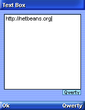
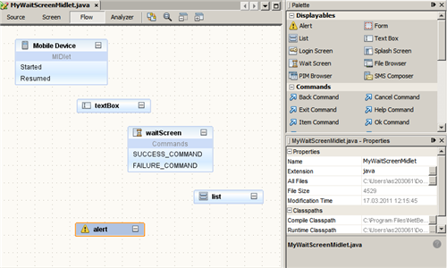

可视 Mobile 设计器定制组件：为 Mobile 应用程序创建等待屏幕
Java ME 应用程序通常需要连接到网络才能正常运行。不幸的是，无线网络的速度仍然较慢。后台任务等待网络连接或数据传输时会导致应用程序暂停，这样用户便会怀疑屏幕是否冻结，或是否需要中止并稍后重试（或不再重试）。那么，开发者是如何帮助用户消除这一不愉快但又很常见的体验呢？
答案就是添加一个 "Wait Screen"（等待屏幕）。利用 "Wait Screen"（等待屏幕），用户可以执行后台任务（例如，与网络建立连接），并且可以在屏幕上显示任务的执行进度或消息，以此来通知用户应用程序仍在继续运行。在本教程中，我们将介绍可视 Mobile 设计器 (Visual Mobile Designer, VMD) 如何通过添加 "Wait Screen"（等待屏幕）定制组件来简化等待屏幕的创建过程，您可以定制 "Wait Screen"（等待屏幕）组件并将其添加到应用程序流中。
如果您对在 NetBeans 中开发 Mobile 应用程序不熟悉，则应首先阅读 NetBeans Java ME MIDP 快速入门指南，然后再继续学习本教程。
目录

要学完本教程，您需要具备以下软件和资源：
WaitScreen 组件的工作方式
为 "Wait Screen"（等待屏幕）组件创建后台任务有两种方法。可以编写一个实现 CancellableTask 接口的类，也可以只使用 SimpleCancellableTask 资源。您可以使用 setTask() 方法为 "Wait Screen"（等待屏幕）指定后台任务。
在完成后台任务之后，"Wait Screen"（等待屏幕）组件会自动切换至其他可显示对象。如果任务成功完成，"Wait Screen"（等待屏幕）将切换至 setNextDisplayable() 方法所提供的显示对象。如果任务失败，"Wait Screen"（等待屏幕）将切换至 setFailureDisplayable() 方法所提供的显示对象。如果未设置失败时可显示的缺省对象，"Wait Screen"（等待屏幕）将切换至 setNextDisplayable() 方法所指定的显示对象。如果未指定下一个可显示的屏幕，"Wait Screen"（等待屏幕）将切换回之前所显示的屏幕。
请注意，此组件仅可用于支持 MIDP 2.0 设备配置文件的应用程序。
返回页首
安装并运行样例应用程序
开始之前，您可能希望查看本教程的最终结果。
请执行下列步骤以安装 waitscreenexample 样例应用程序：
- 下载 WaitScreenExample.zip。
- 解压缩该文件。
- 在 IDE 中，选择 "File"（文件）> "Open Project"（打开项目），然后浏览至包含该解压缩文件的文件夹。
- 单击 "Open Project"（打开项目）。
"Project"（项目）视图应如下所示：

- 在 "Projects"（项目）窗口中，右键单击该项目节点，然后选择 "Run"（运行）（或按 F6 键）。当应用程序运行时，将会打开一个仿真器窗口，其中显示了在缺省设备仿真器中运行的应用程序。
- 在仿真器窗口中，单击 "Launch" 下面的按钮。仿真器将显示 NetBeans Web 站点的 URL 地址：http://netbeans.org。
- 单击 "Ok" 下面的按钮。屏幕将询问您是否记录通话时间。
- 单击 "Yes" 下面的按钮以继续。当仿真器尝试连接至该 Web 站点时，仿真器将显示 "Wait Screen"（等待屏幕）。

- 在仿真器建立连接后，关闭应用程序。
返回页首
使用 "Wait Screen"（等待屏幕）定制组件创建 Mobile 应用程序
创建 WaitScreenExample 项目
- 选择 "File"（文件）> "New Project"（新建项目）（Ctrl-Shift-N 组合键）。在 "Categories"（类别）下，选择 "Java ME"。在 "Projects"（项目）下，选择 "Mobile Application"（Mobile 应用程序），然后单击 "Next"（下一步）。
- 在 "Project Name"（项目名称）字段中输入
WaitScreenExample。将Project Location（项目位置）更改为系统中的某个目录。我们将此目录称为 $PROJECTHOME。
- 取消选中 "Create Hello MIDlet"（创建 Hello MIDlet）复选框。单击 "Next"（下一步）。
- 将 "Sun Java Wireless Toolkit 2.5.2" 保留为选定的仿真器平台。单击 "Finish"（完成）。
在 WaitScreenExample 项目中添加包和 Visual MIDlet
- 在 "Project"（项目）窗口中选择
WaitScreenExample 项目，然后选择 "File"（文件）> "New File"（新建文件）（Ctrl-N 组合键）。在 "Categories"（类别）下，选择 "Java"。在 "File Types"（文件类型）下，选择 "Java Package"（Java 包）。单击 "Next"（下一步）。
- 在 "Package Name"（包名）字段中输入
waitscreenexample。单击 "Finish"（完成）。
- 在 "Project"（项目）窗口中选择
waitscreenexample 包，然后选择 "File"（文件）> "New File"（新建文件）（Ctrl-N 组合键）。在 "Categories"（类别）下，选择 "MIDP"。在 "File Types"（文件类型）下，选择 "Visual MIDlet"。单击 "Next"（下一步）。
- 分别在 "MIDlet Name"（MIDlet 名称）和 "MIDP Class Name"（MIDP 类名）字段中输入
MyWaitScreenMidlet。单击 "Finish"（完成）。
在 MyWaitScreenMidlet 中添加组件
选择 Visual MIDlet 以打开可视 Mobile 设计器 (Visual Mobile Designer, VMD)。单击 VMD 窗口顶部的 "Flow"（流）视图可打开 "Flow"（流）设计器，您将在其中设计应用程序流。
- 将 Visual MIDlet 切换至 "Flow"（流）视图。将以下屏幕组件从 "Component Palette"（组件面板）拖放至 "Flow"（流）设计器中：
-
Text Box（文本框）
-
Wait Screen（等待屏幕）
-
List（列表）
-
Alert（警报）
- 选择 textBox。在 "Properties"（属性）窗口（位于 "Component Palette"（组件面板）下方）中，将其 "Title"（标题）属性更改为
Text Box。
- 采用相同的操作步骤更改以下组件的 "Title"（标题）属性：
- 对于以下各个组件，请使用这些属性值：
-
将 textBox 的 "Text"（文本）属性更改为 http://netbeans.org
-
将 alert 的 "String"（字符串）属性更改为 Connection Failed
-
将 WaitScreen 的 "Text"（文本）属性更改为 Please Wait...
"Flow"（流）视图应如下图所示：

添加 "Image"（图像）资源
在此部分，您将添加 "Wait Screen"（等待屏幕）和 "Alert Screen"（警报屏幕）所使用的图像。
- 下载 alert.png 和 sandglass.png 文件，并将其复制到
$PROJECTHOME/src/waitscreenexample 文件夹中。
- 右键单击 alert 组件，然后在弹出式菜单中选择 "Properties"（属性）。
- 在 "Properties"（属性）对话框中，单击 "Image"（图像）属性的省略号按钮 (
 )。
)。
- 在 "Image"（图像）对话框中，单击 "Add"（添加）。
此时将添加 image1 组件。
- 单击 "Browse"（浏览），然后在 "Open"（打开）对话框中指定复制的 alert.png 文件的路径。
- 单击 "Open"（打开）。
此时将添加图像。
- 单击 "OK"（确定）以关闭 "Image"（图像）对话框。
- 单击 "Close"（关闭）以关闭 "Properties"（属性）对话框。
alert.png 图像将绑定到 alert 组件。
- 对于 waitScreen 组件，请重复上面的步骤 2 至 8，将 sandglass.png 添加为 image2，然后将其绑定到该组件。
在 "Text Box"（文本框）和 "Wait Screen"（等待屏幕）组件中添加 "Ok Commands"（确定命令）、"Back Commands"（后退命令）及 "Exit Commands"（退出命令）
- 从组件面板的 "Commands"（命令）类别中选择 "Ok Command"（确定命令）。将其拖放至 textBox 中。
- 从组件面板的 "Commands"（命令）类别中选择 "Back Command"（后退命令）。将其拖放至 list 中。
- 从组件面板的 "Commands"（命令）类别中选择 "Exit Command"（退出命令）。将其拖放至 list 中。
创建应用程序流
现在，您可以创建应用程序流了。
- 在 "Flow"（流）视图中，单击 "Mobile Device"（移动设备）上的 "Started"（已启动），然后将其拖至 textBox 组件中。
- 采用相同的方法，按照下图所示连接各个组件。

为等待屏幕创建后台任务
- 在 "Flow"（流）视图中，右键单击 waitScreen 组件，然后从弹出式菜单中选择 "Properties"（属性）。
- 在 "Properties"（属性）对话框中，从 "Task"（任务）下拉菜单中选择 "<NewCancellableTask>"，然后单击 "Close"（关闭）。
现在，simpleCancellableTask 是 waitScreen 组件的后台任务。
- 单击可视 Mobile 设计器顶部的 "Source"（源）按钮，以切换至应用程序的源代码。
- 将以下代码粘贴到
MyWaitScreenMIDlet 源代码的 public void destroyapp(boolean unconditional) { } 后面，为该后台任务添加一个方法：
private void getServerInfo() throws IOException {
String url = textBox.getString();
list.deleteAll();
/**
* Open an HttpConnection
*/
HttpConnection hc = (HttpConnection) Connector.open(url);
/**
* Gets a header field key and header field by index and
* insert it into list.
*/
list.setTitle(hc.getURL());
for (int i=0;hc.getHeaderFieldKey(i)!=null; i++){
list.insert(i,hc.getHeaderFieldKey(i)+" :"+hc.getHeaderField(i),null);
}
/**
* Closing time ...
*/
hc.close();
}
- 在源代码中右键单击，然后在弹出式菜单中选择 "Fix Imports"（修复导入）（此外，也可以按 Ctrl+Shift+I 组合键）。
- 找到 public class MyWaitScreenMidlet extends MIDlet implements CommandListener { 字符串（第 18 行），然后插入 final 使其显示以下内容：
public final class MyWaitScreenMidlet extends MIDlet implements CommandListener {
- 在源代码（第 38 行）中找到 public MyWaitScreenMidlet() 方法，然后在 public MyWaitScreenMidlet() { 后面插入以下代码：
List list1 = getList();
- 单击 "Screen"（屏幕）以切换至 "Screen"（屏幕）视图，然后选择 "SimpleCancellableTask"。
- 在 "Properties"（属性）窗口中，单击 "Executable Code"（可执行代码）属性的省略号按钮 ()。
- 在 "Executable code"（可执行代码）对话框中，单击 "Go To source"（转至源）。
- 在源代码（第 328 行）中找到 getSimpleCancellableTask() 方法，然后将以下代码插入到 public void execute() throws Exception {（显示的内容为 // write task-execution user code here）后面：
getServerInfo();
运行项目
按 F6 键以运行主项目。
或者，也可以选择 "Run"（运行）> "Run Main Project"（运行主项目）。
返回页首
"Wait Screen"（等待屏幕）和 SimpleCancellableTask 组件的 Javadoc
NetBeans IDE 提供 WaitScreen 和 SimpleCancellableTask 组件以及可在 VMD 中使用的其他组件的 API Javadoc。要阅读 WaitScreen 和 SimpleCancellableTask 组件的 Javadoc，请执行以下步骤：
- 将光标放在源代码中的 WaitScreen 或 SimpleCancellableTask 组件上，然后按 Ctr-Shift-空格组合键（或选择 "Source"（源）> "Show Documentation"（显示文档））。
此时将在弹出式窗口中显示该元素的 Javadoc。
- 在弹出式窗口中单击 "Show documentation in external web browser"（在外部 Web 浏览器中显示文档）图标 (
 )，以便在浏览器中查看有关 WaitScreen 或 SimpleCancellableTask 组件的详细信息。
)，以便在浏览器中查看有关 WaitScreen 或 SimpleCancellableTask 组件的详细信息。
返回页首
另请参见
返回页首

{kind=link}
{kind=link}
{kind=link}